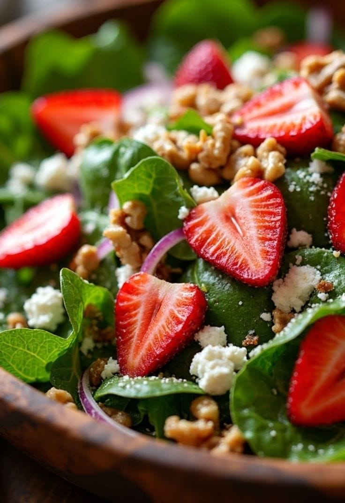
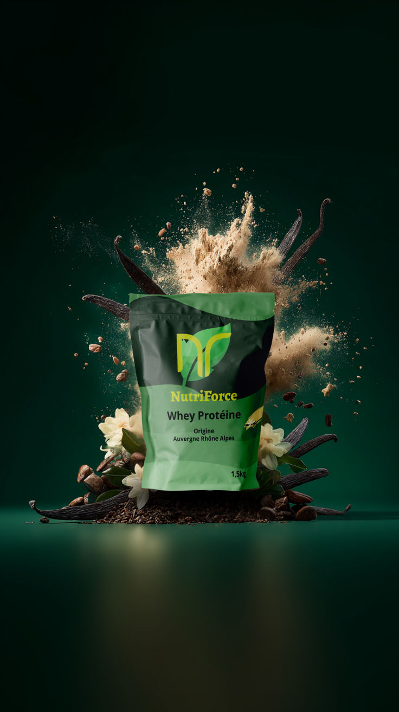
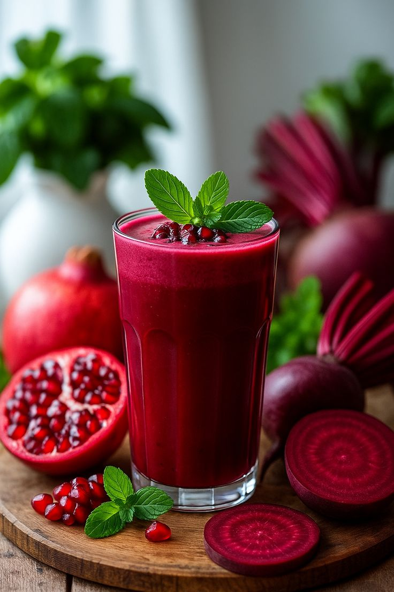

Training in Running Training in running involves a variety of workouts and methods to improve performance and endurance. Here are some key aspects to consider: Base Runs: Essential for developing cardiovascular fitness and strength. They are typically easy and conversational in pace. 1 Recovery Runs: Low-intensity efforts to aid recovery and prevent injury. They should be run at an easy pace, ideally below 70% of maximum heart rate. 1 Strength Training: Targeting leg muscles, core, and supporting body parts to prevent injuries and enhance performance. 1 Cross-Training: Activities like swimming, biking, or yoga to give the legs a break from running and improve overall fitness. 1 Structured Training Plans: Gradually increasing the duration and intensity of runs to adapt safely and reduce injury risk. 1 Personalized Running Plans: Tailored to individual goals and fitness levels, ensuring a comprehensive training approach. 1 These elements work together to build a solid foundation for running, helping runners achieve their goals and enjoy the sport.
Start Your running journey step by step
Prepare yourself to complete a 5k run
Advance training for long-distance runners.
Nutrition for Runners For runners, a balanced diet is essential to support performance and recovery. Here are some key points to consider: Carbohydrates: Aim for 60-70% of your calories from carbohydrates, as they are the body's primary energy source during running. Complex carbs like whole grains, fruits, and starchy vegetables are ideal for sustained energy. 6 Protein: Include lean meats, poultry, fish, eggs, dairy, beans, and nuts to support muscle recovery and repair. Protein is crucial for rebuilding muscle fibers after intense runs. 6 Healthy Fats: Incorporate healthy fats from sources like avocados, nuts, seeds, olive oil, and fatty fish to provide longer-lasting energy and support joint health. 6 Hydration: Stay hydrated with water and consider electrolyte tablets or drinks during intense or long runs to maintain balance and muscle function. 6 Micronutrients: Ensure a varied diet with plenty of fruits, vegetables, dairy, and lean proteins to meet the needs of vitamins, minerals, and electrolytes. 6 By focusing on these key components, runners can optimize their nutrition for better performance and faster recovery. 6

Fresh Vegetables provide Vitamins and energy

Protein Powder provide Vitamins and energy

Beetroot Juice provide Vitamins and energy
Salads are more than just a colorful side dish; they’re a nutritional powerhouse brimming with health benefits. Packed with essential vitamins and minerals, salads offer a delicious way to support overall wellness. Dark leafy greens provide vitamins A, C, and K, which are vital for healthy skin, a robust immune system, and strong bones. Also, the antioxidants found in ingredients like tomatoes and bell peppers help combat oxidative stress and reduce the risk of chronic diseases. Incorporating salads into daily meals not only enhances individual health but also promotes environmental sustainability. With a focus on plant-based ingredients, salads require fewer resources than meat-heavy diets, making them a smart choice for both personal well-being and the planet. As individuals explore the diverse flavors and textures of salads, they’ll discover a satisfying and nourishing addition to their balanced diet.
Protein powders are dietary supplements that can support muscle growth, tissue repair, and overall nutrition, though their benefits vary depending on individual needs and diet. Health Benefits Protein powders are rich in essential amino acids, which are crucial for building and repairing muscles, producing enzymes, and supporting hormone function. They may also help with weight management by promoting satiety, which can reduce overall calorie intake. Some studies suggest that whey protein (WP) or whey protein hydrolysate (WPH) can help older adults reduce body fat during calorie-restricted diets, with WPH potentially offering more efficient energy metabolism. However, the overall evidence for protein powders in weight loss remains mixed, and more research is needed. Medical News Today Types of Protein Powder Protein powders come in various forms, including: Whey Protein: Derived from milk, quickly absorbed, and commonly used for post-workout recovery. 1 Casein Protein: Also milk-based, digests more slowly, providing a sustained release of amino acids. Plant-Based Proteins: Such as soy, pea, or rice protein, suitable for vegetarians or those with lactose intolerance. 1
Beetroot Juice: 16 Benefits, Side Effects & How to Make It Beetroot juice is a vibrant, ruby-red beverage extracted from fresh beetroots. It is rich in antioxidants, vitamins, and minerals, and has been linked to various health benefits, including improving blood pressure, protecting the liver, boosting athletic performance, and more. Here are some of the key benefits and nutritional profile of beetroot juice: Improves Blood Pressure: The high nitrate content in beetroot juice helps dilate blood vessels, which can significantly lower blood pressure. 1 Boosts Athletic Performance: Beetroot juice can enhance athletic performance by increasing oxygen delivery to the muscles. 1 Supports Liver Health: The betaine in beetroot juice helps reduce fatty deposits in the liver, supporting its natural detoxification process. 1 Anti-inflammatory Effects: Betalains, the pigments that give beets their vibrant color, possess powerful anti-inflammatory properties. 1 Nutritional Profile: Beetroots are particularly rich in nitrates, which convert into nitric oxide in the body, dilating blood vessels and improving blood flow. 1 Beetroot juice is generally safe to consume, but it is important to be aware of potential side effects and to consult a healthcare professional if you have any pre-existing health conditio
Weekly Progress in Running
Weekly progress in running can be measured through various metrics, including distance covered, time spent running, and improvements in speed and endurance. For beginners, focusing on consistent weekly runs and incorporating different training methods can lead to noticeable improvements over time. Here are some key points to consider for maintaining and enhancing your running progress:
Consistency:
Regular running, even if it's just a few minutes, can build stamina and strength over time.
1
Variety:
Incorporating different types of runs, such as easy, interval, and long runs, can help improve overall fitness and reduce injury risk.
2
Progression:
Gradually increasing the distance and intensity of your runs can help you push your limits and improve your performance.
2
Recovery:
Taking time to recover and rest is crucial for your body to adapt and improve.
1
Nutrition and Hydration:
Fueling your body with the right nutrients and staying hydrated can support your running performance.
1
By following these guidelines and adjusting your training plan as needed, you can achieve consistent weekly progress and enjoy your running journey.
6
MARATHON 2026
Name: ABIRAMI ASOKAN
Category: 5K
Location: CHENNAI